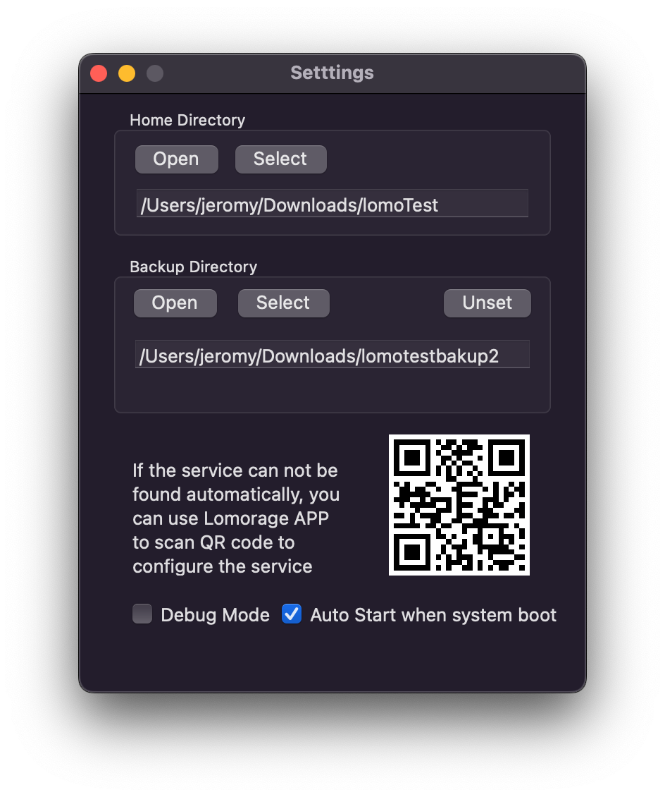
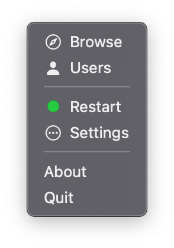

After installed, run the application and set the "Homer Directory" used for storing photos, and then wait for the status indicator turning green.


Advanced: prefer the command line? Open Terminal and run:
curl -fsSL https://lomosw.lomorage.com/mac/install.sh | bash
This installs just the lomod backend (no GUI) to your user profile, no admin rights required.